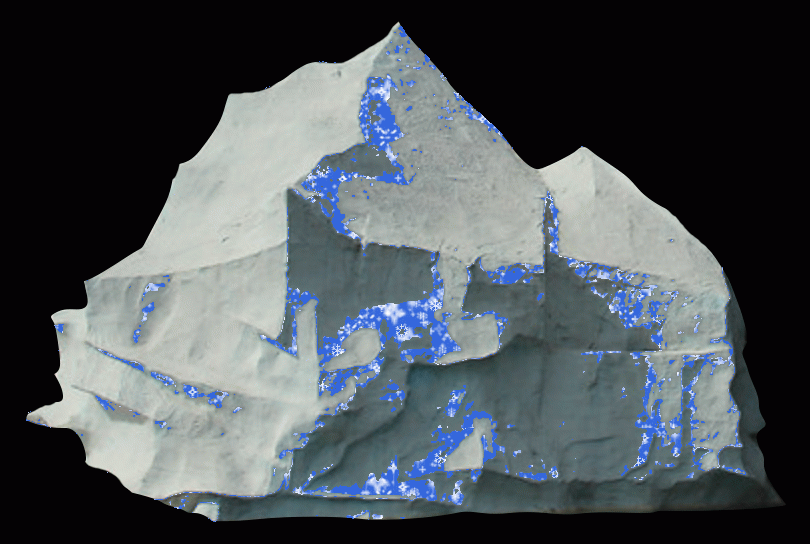
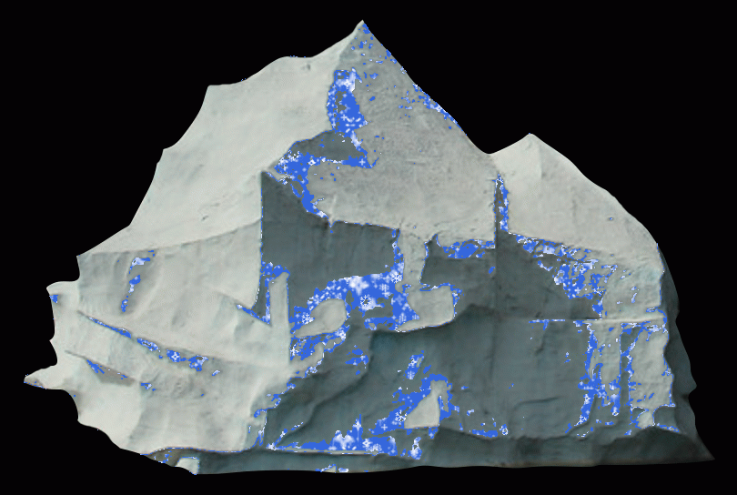

"from the moment we were handed our tickets to board, we were lost in an era and event of another time. the details were amazing, and the thoroughness of the information, as well as the ready-to-help and well-informed ship personnel made this unforgettable...it's not just a museum: it's a total experience. and you cannot leave without feeling that each day is a precious gift."
"This attraction really gives you insight into one of history's most familiar tragedies. When you enter you are assigned the name of one of the passengers and at the end you find out if you survived or not. "
 

"Some may suggest this museum is a tourist trap, but I beg to differ. It is a sincere remembrance of a time long gone as well as a caution against hubris."


"So interesting and very well done--excellent historical attraction. The detail of the entire tragedy is excellent and brings it to life to anyone who is familiar with the history. The costumes and actual artifacts were on display."

"The gift shop was pleasantly affordable, so we were able to purchase several souvenirs to add to our already large Titanic collection!"

"Amid all of the kitsch and traffic that is Pigeon Forge stands a boat that looks quite familiar. For what it is, this attraction is very well done. The period costumes of the guides adds to the atmosphere and the "boarding pass" personalizes the experience. It offers a new perspective on the tragedy and we gained some knowledge about this terrible event. If you enjoy history, then bypass the go-karts and head for the ship."